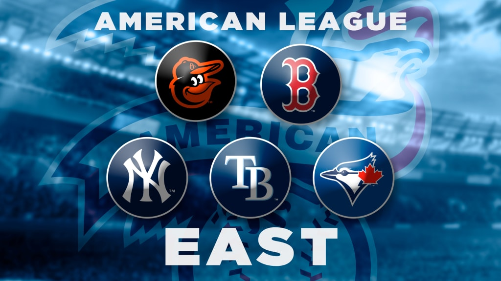

American League East Teams
The American League East division was created in 1969 as Major League Baseball expanded and reorganized its leagues into divisions. Initially, it included six teams: the Baltimore Orioles, Boston Red Sox, Cleveland Indians, Detroit Tigers, New York Yankees, and Washington Senators. After the Senators moved in 1971 and became the Texas Rangers in the AL West, the Milwaukee Brewers moved into the AL East to maintain balance. The Toronto Blue Jays joined as an expansion team in 1977. When MLB realigned into three divisions in 1994, the Cleveland Indians and Detroit Tigers moved to the AL Central. The Tampa Bay Devil Rays were added as an expansion team in 1998, with their name changing to the Tampa Bay Rays in 2008. This division is often considered one of the toughest in baseball.
Baltimore Orioles
The Baltimore Orioles franchise dates back to 1901 as the Milwaukee Brewers. They moved to St. Louis in 1902, becoming the St. Louis Browns, and relocated to Baltimore in 1954, adopting the Orioles nickname. They play at Oriole Park at Camden Yards, known for its influence on modern ballpark design. The team's colors are orange and black. Key players include Brooks Robinson, Frank Robinson, Jim Palmer, Eddie Murray, and Cal Ripken Jr., among other greats.
Boston Red Sox
The Boston Red Sox were founded in 1901 as the Boston Americans and adopted the Red Sox name in 1908. They play at Fenway Park, which opened in 1912. The Red Sox's primary team colors are red and navy blue. Their history includes the "Curse of the Bambino," which ended with a World Series win in 2004, and several other championships. Notable players include Ted Williams, Carl Yastrzemski, and David Ortiz.
New York Yankees
The New York Yankees were established in 1903 as the New York Highlanders, replacing the Baltimore Orioles, and later became known as the Yankees. They are famous for their navy blue and white pinstripes and have won more World Series championships than any other MLB team. The Yankees' main rivals are the Boston Red Sox, and their iconic home is Yankee Stadium. The team has been home to legendary players such as Babe Ruth, Lou Gehrig, Joe DiMaggio, and Derek Jeter.
Tampa Bay Rays
The Tampa Bay Rays joined the American League as an expansion team in 1998 as the Tampa Bay Devil Rays. In 2008, the team shortened its name to the Rays and adopted a new blue and white color scheme. They play their home games at Tropicana Field in St. Petersburg, Florida. Though they have never won a World Series, the Rays have appeared twice, in 2008 and 2020, and are known for their strong emphasis on analytics and player development.
Toronto Blue Jays
Founded in 1977 as an expansion team, the Toronto Blue Jays are the only Major League Baseball team based in Canada. They play their home games at Rogers Centre in Toronto. The Blue Jays won back-to-back World Series titles in 1992 and 1993, making them the first team outside the United States to win the World Series. Key players from their championship teams include Joe Carter, Roberto Alomar, and Paul Molitor. Their team colors are blue, white, and red.